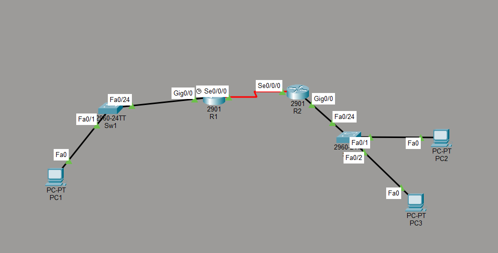
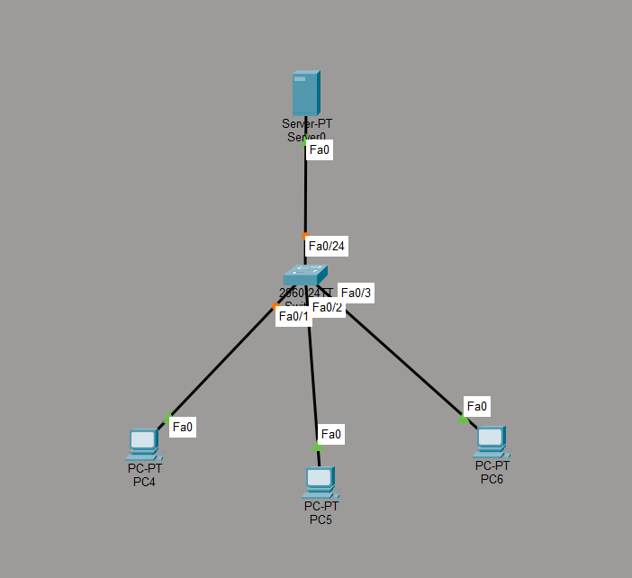
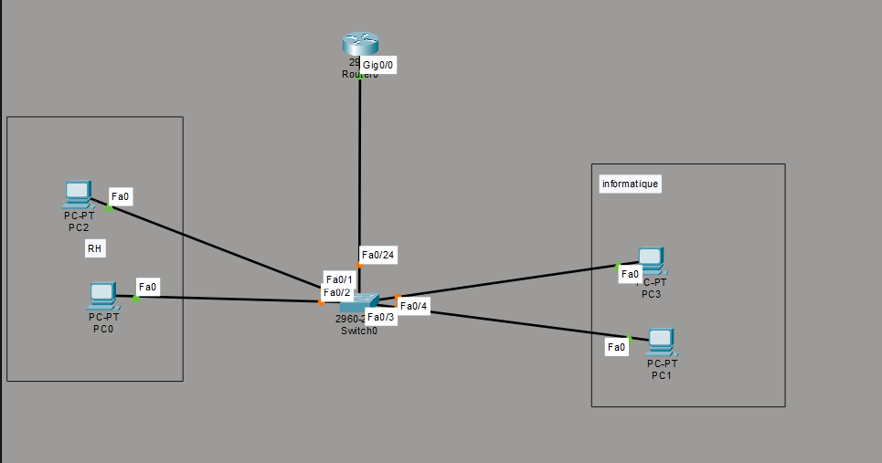
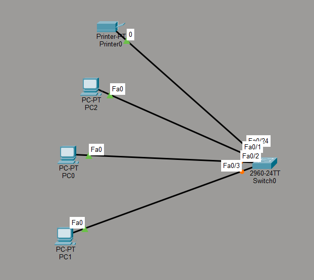

Le contexte
En complément de mon BTS SIO option SISR, j'ai voulu pratiquer par moi-même les notions vues en cours plutôt que d'attendre les seuls TP encadrés. J'ai donc construit progressivement plusieurs topologies sur Cisco Packet Tracer, en partant d'un réseau simple pour aller vers des architectures plus proches de ce qu'on peut trouver en entreprise : segmentation par VLAN, serveur dédié, puis interconnexion entre deux sites via des routeurs.
Étape 1 — Réseau local simple
Premier exercice : un switch unique reliant plusieurs postes et une imprimante réseau. L'objectif était de bien maîtriser l'adressage IP de base avant de complexifier la topologie — chaque équipement reçoit une adresse IP dans le même sous-réseau pour pouvoir communiquer entre eux via le switch.

3 postes et une imprimante réseau reliés à un switch unique — premier test d'adressage IP.
Étape 2 — Segmentation en VLAN
Étape suivante : séparer le réseau en deux groupes logiques distincts grâce aux VLAN (Virtual LAN). J'ai créé deux VLAN sur le switch :
🟧 VLAN 1 — RH 🟦 VLAN 2 — Informatique
Chaque VLAN regroupe les postes d'un même service, même s'ils sont physiquement branchés sur le même switch — c'est tout l'intérêt du VLAN : isoler le trafic par groupe logique plutôt que par câblage physique. Un routeur est ensuite venu se connecter au switch pour assurer le routage inter-VLAN, permettant aux deux VLAN de communiquer entre eux quand c'est nécessaire, tout en restant isolés par défaut.

VLAN 1 (RH) et VLAN 2 (Informatique) segmentés sur le même switch, avec un routeur pour le routage inter-VLAN.
| VLAN | Service | Ports switch |
|---|---|---|
| VLAN 1 | RH | Fa0/1, Fa0/2 |
| VLAN 2 | Informatique | Fa0/3, Fa0/4 |
Étape 3 — Ajout d'un serveur
Troisième topologie : un switch desservant plusieurs postes ainsi qu'un serveur dédié. Cette étape m'a permis de pratiquer l'intégration d'un serveur dans un réseau local et de réfléchir à son adressage IP fixe, indispensable pour qu'il reste toujours joignable au même endroit du réseau.

Un serveur ajouté au réseau local, avec adresse IP fixe pour rester toujours accessible.
Étape 4 — Interconnexion de deux sites
Dernière étape, la plus avancée : deux réseaux locaux distincts, chacun avec son propre switch et ses postes, reliés entre eux par deux routeurs connectés via une liaison série (WAN). C'est le type de topologie qu'on retrouve quand une entreprise a plusieurs sites géographiques à interconnecter.
Cette topologie m'a demandé de combiner plusieurs notions en même temps : adressage IP cohérent entre les deux réseaux, configuration des interfaces séries des routeurs, et mise en place du routage pour que les postes d'un site puissent atteindre ceux de l'autre site.

Deux sites distincts interconnectés via une liaison série entre deux routeurs.
Compétences mobilisées
Construire ces topologies par moi-même, en dehors du cadre des cours, m'a permis de vraiment ancrer les notions théoriques en les mettant en pratique à mon rythme.
Ce que cette pratique m'a apporté
Pratiquer en dehors des cours m'a aidé à mieux comprendre des notions qui peuvent sembler abstraites sur le papier, comme la segmentation VLAN ou le routage inter-VLAN. En construisant moi-même chaque topologie, étape par étape, j'ai pu voir concrètement l'effet de chaque configuration plutôt que de simplement suivre une procédure. C'est aussi une bonne préparation pour mes certifications CCNA, qui demandent une vraie aisance avec ce type de manipulation.